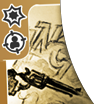
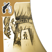
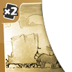
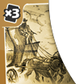
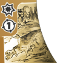

¡BANG!
Las cartas ¡BANG! son el método principal para disparar un

y reducir los puntos de vida de otros jugadores. ¡Solo puedes jugar cartas ¡BANG! contra jugadores que estén dentro de tu alcance de disparo! Normalmente no se puede efectuar más de un ¡BANG! por turno.

¡Fallaste!
Si un
te alcanza, puedes jugar de inmediato una carta de ¡Fallaste!, aunque no sea tu turno, para cancelar [

] el disparo. Si no lo haces, perderás 1 punto de vida. Si pierdes tu último punto de vida, quedarás eliminado de la partida, a no ser que te tomes una Cerveza para salir del apuro.

Cerveza
Juégala al frente para recuperar un punto de vida. CERVEZA también se usa "in extremis" si vas a perder tu último punto de vida. CERVEZA no tiene ningún valor cuando solo quedan 2 jugadores.

¡Pánico!
Permite "quitarle una carta" (robar) a "un jugador a distancia de 1". Esta distancia solo la modifican cartas como MUSTANG o MIRA. En modo Normal, puedes usar esta carta contigo mismo en el centro de la mesa.

La Ingenua Explosiva
Úsala contra "cualquier jugador" para obligarle a descartarse de una carta, sin importar la distancia. En modo Normal, puedes usar esta carta contigo mismo en el centro de la mesa.

Duelo
Desafía a cualquier otro jugador, esté a la distancia que esté. El jugador retado puede jugar una carta ¡BANG!; luego tú tendrás que jugar otra carta ¡BANG!, y así hasta que uno de los dos no pueda descartarse de más cartas ¡BANG!, en cuyo caso pierde 1 punto de vida y se termina el duelo.

¡Indios!
Cada jugador (excepto el que haya jugado esta carta) podrá responder con una carta ¡BANG! para no perder 1 punto de vida.

Almacén
¡Cuando juegas esta carta, todos los jugadores reciben 1 carta! Empezando por ti y continuando en el sentido de las agujas del reloj, cada jugador elige una de esas cartas y la añade a su mano.

Diligencia
Roba 2 cartas de la parte superior del mazo.

Wells Fargo
Roba 3 cartas de la parte superior del mazo.

Ametralladora Gatling
La Ametralladora Gatling dispara un
a "todos los demás jugadores", estén a la distancia que estén. Esta carta no se considera una carta ¡BANG!. En tu turno puedes jugar cualquier cantidad de cartas de Gatling, pero solo una de ¡BANG!.

Saloon
Esta carta hace que todos los jugadores (incluido tú) recuperéis 1 punto de vida (si es posible). No se puede jugar una carta de Saloon como último recurso. ¡No es una Cerveza!

Whisky (DODGE CITY)
Debes descartarte una carta adicional para poder usarla. Juégala frente a ti, en el centro de la mesa, para recuperar 2 puntos de vida.

Tequila (DODGE CITY)
Debes descartarte una carta adicional para poder usarla. Juégala frente a ti, en el centro de la mesa, para ganar 1 punto de vida; o encima de cualquier otro jugador para darle a él el punto de vida.

Puñetazo (DODGE CITY)
Mismo efecto que un BANG! [
], pero solo a distancia de 1; PUÑO no cuenta como BANG!.

Springfield (DODGE CITY)
Debes descartarte una carta adicional para poder usarla. Juégala ante otro jugador para lanzarle un
. Springfield no cuenta como BANG!

Esquivar (DODGE CITY)
Igual que un ¡FALLASTE! [
], pero también te permite robar una carta extra [

].

Ragtime (DODGE CITY)
Debes descartarte una carta adicional para poder usarla. Usa esta carta contra un jugador para robarle una carta
. En dificultad "normal" también puedes usar esta carta contigo mismo poniéndola frente a ti en el centro de la mesa.

Reyerta (DODGE CITY)
Debes descartarte una carta adicional para poder usarla. Juégala en el centro de la mesa para descartar una carta a todos los demás jugadores.